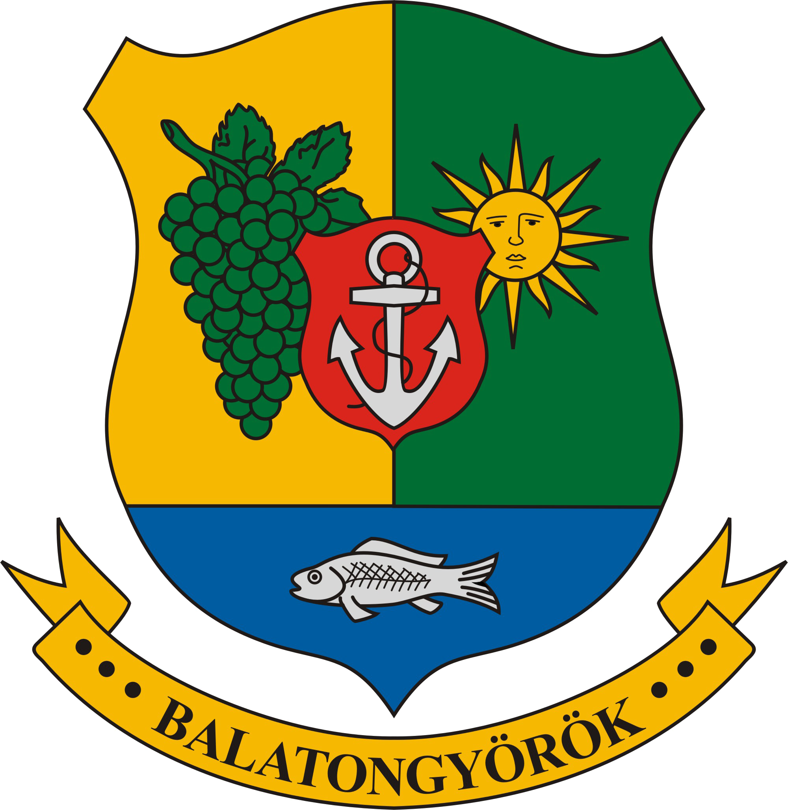

Balatongyörök kilátói

Balatongyörökön szebbnél-szebb helyszíneken 2 kilátó is várja a turistákat.
Batsányi kilátó
| A Pap-hegy csúcsán, az úgynevezett Boncsostetőn található a kilátó, ahonnan páratlan panoráma nyílik a Balaton-felvidékre. 2003-ban a Keszthelyi erdészet rendbe hozta a korábban megrongált kilátót. Megközelíthető a Bélapi pihenőtől vagy a Szépkilátótól a Szerelemdombon keresztül. Vagy a Szépkilátótól induló piros háromszög jelzésen is. |
| Szélesség |
N 46.76855° |
| Hosszúság |
E 17.35715° |
| Magasság |
448 m |
| Megye/ország |
Zala |
| Hegy |
Pap-hegy |
Forrás:
hazaielmenyek.hu
Bél Mátyás-kilátó
| A Pap-hegy csúcsán, az úgynevezett Boncsostetőn található a kilátó, ahonnan páratlan panoráma nyílik a Balaton-felvidékre. 2003-ban a Keszthelyi erdészet rendbe hozta a korábban megrongált kilátót. Megközelíthető a Bélapi pihenőtől vagy a Szépkilátótól a Szerelemdombon keresztül. Vagy a Szépkilátótól induló piros háromszög jelzésen is. |
| Szélesség |
N 46.76855° |
| Hosszúság |
E 17.35227° |
| Magasság |
221 m |
| Megye/ország |
Zala |
| Hegy |
Garga-hegy |
Forrás
hazaielmenyek.hu